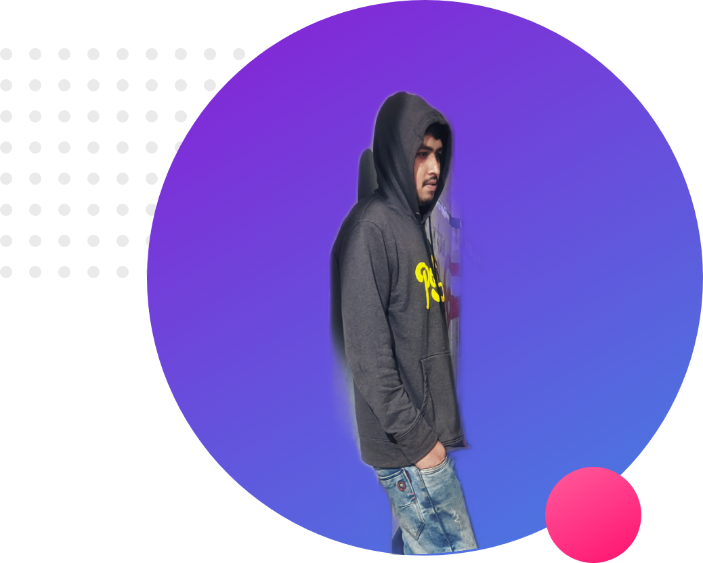
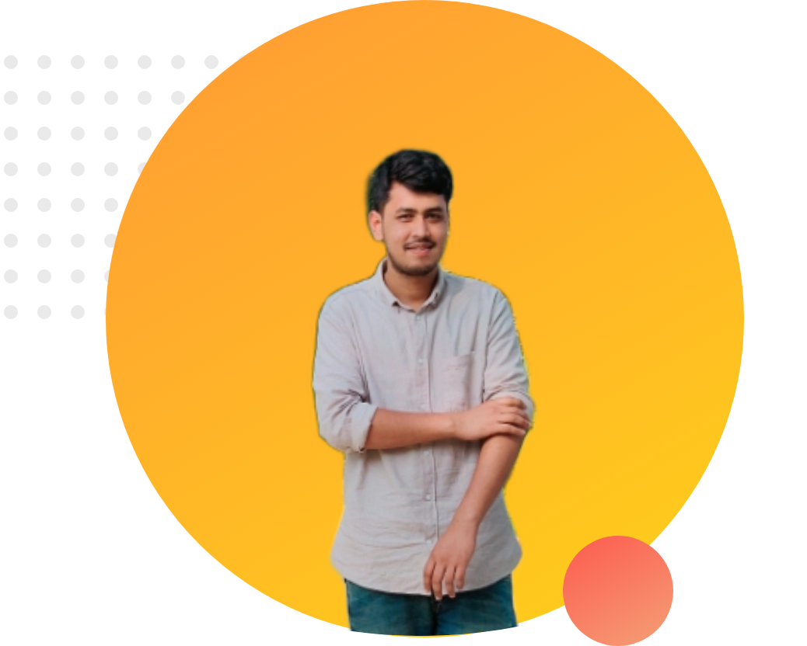

I am studying at bangabandhu sheikh mujibur rahman science and technology University.My department is computer science and technology.My Home District is lalmonirhat.
Hire Me

I already leaarn html,css,js,MySQL. Now i learn Node js.So I want to be full strack web developer
Watch Ei ObelayMy Experience
I already leaarn html,css,js,MySQL.Now i learn Node js.So I want to be full strack web developer.I already leaarn html,css,js.MySQL.Now i learn Node js.So I want to be full strack web developer.I already leaarn html,css,js,MySQL.Now i learn Node js.So I want to be full strack web developer.
I am studying at bangabandhu sheikh mujibur rahman science and technology University.My department is computer science and technology.My Home District is lalmonirhat.I am studying at bangabandhu sheikh mujibur rahman science and technology University.My department is computer science and technology.My Home District is lalmonirhat